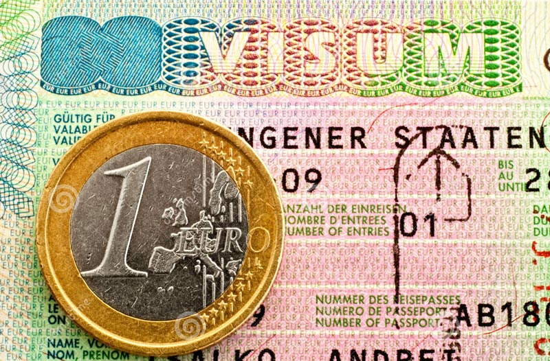

欧洲旅行一般都避免不了进入多个国家，需要按照欧盟法律合理解决。去欧洲旅行之前要明白“欧盟国”“申根国”“欧元国”之间的区别后，就会事半功倍。 申根签证：指根据申根协议而签发的签证。这项协议由于在卢森堡的 “申根” 签署而得名。它规定了成员国的单一签证政策。你一旦获得某个国家的签证，即可在签证有效期内在所有申根国家自由旅行。而实施这项协议的国家便是通常所说的“申根国家”。 根据申根协议，一个申根成员国签发的签证，在所有其它成员国也被视作有效，可以无需另外申请签证而前往。申根成员国取消内部边界的常规边境检查，但保留进行抽查或者必要时短期恢复常规边境检查的权利。 1、欧洲申根签证基本知识 1）什么是申根签证 申根签证是出访申根国家必须申请的一种签证。它有多种形式：探亲访友、短期旅游签证、以及商务签证等；根据时间和长短，又可分为一次或多次入境签证、短期或长期签证。 需要注意的是，中国公民过境申根协议国，24小时内不出机场无需办理过境签证。但如果要连续过境两个申根协议国（如北京－阿姆斯特丹－巴黎－开罗），则被视为入境申根国家，须事先办妥其中一个国家的过境签证。 2）申根签证适用国家 正式实施申根协议的国家有26个：奥地利、比利时、丹麦、芬兰、法国、德国、冰岛、意大利、希腊、卢森堡、荷兰、挪威、葡萄牙、西班牙、瑞典、爱沙尼亚、拉脱维亚、立陶宛、波兰、捷克、匈牙利、斯洛伐克、斯洛文尼亚、列支敦士登、马耳他和瑞士。另外，下列国家因为与申根邻国没有实际上的边境检查，可以凭申根签证任意进入：安道尔、梵蒂冈、圣马力诺、摩纳哥。 3）申根签证费用 办理签证一般需向使馆/总领馆支付签证费60欧元（欧元参考汇率查询），根据各国家办理签证的具体情况及汇率状况，金额略有不同。 签证服务费：除了可以免除费用的情况之外，此项费用均需提供。签证服务费为180元人民币，此项收费与领事馆共同制定，包括签证申请过程中，签证受理中心提供的信息咨询、预约、材料审核、申请表格录入等各项服务。 免费项（以下情况无需支付签证申请费用，但您要提交有效证明文件） 六周岁以下儿童（短期）； 12岁以下的亚美尼亚和阿塞拜疆国籍儿童； 以学校交流为目的的学生访问以及陪同老师； 获得非盈利科研组织邀请的科研工作者； 非荷兰籍欧盟或欧洲经济区公民的直系家属（配偶或者未满21岁的外籍子女），且此次该欧盟公民一同陪同家属前往荷兰，或者该欧盟公民居住在荷兰，家属前往荷兰与该欧盟公民家庭团聚； 25岁或以下的非营利组织的代表，前往荷兰参加研讨会、会议、体育、文化和教育活动， 用工作签证并受雇于荷兰国际组织（禁止化学武器组织/审理委员会的实习工作人员，联合国教科文组织/ 医疗护理卫生信息协会/荷兰国际航天测量与地球学院/刑事法院的实习工作人员等）的员工以及他们的家属。 4）申根签证办理方式 A.通过签证申请受理中心递签 B.向使馆或总领事馆递签 5）申根签种类 申根签证分为入境和过境两类。 A.入境签证：有一次入境和多次入境两种。签证持有者分别可一次连续停留90天或每半年多次累计不超过3个月。如需长期停留，可向某一成员国申请，只在该国使用的国别签证。 单次入境签证：允许持有人一次性进入申根区域，停留时间不能超过签证上写明的有效时间。最长停留时间不能超过90天（例如：7月1日至9月28日）。 多次入境签证：允许持有人在任意180天内多次进入申根国家区域，总停留时间不得超过90天。在签证有效期内，可以持续停留在申根区域，也可以多次出入境。另有一年内有效多次入境签证；在申请者提供足够的担保的情况下，有效期也可能超过一年，最多可达5年，因此也被称为旅行签证。另有一到五年内有效多次入境签证，由使领馆决定签发。 B.过境签证：指过境前往协定国以外国家的签证，一般有一次、两次两种，特殊情况下可颁发多次过境签证。每次过境时间一般为3天，最长为5天。 过境签证允许非申根国公民通过申根国家前往另外一个非申根国家。过境签证可以是一次，两次或者多次，每次过境的停留时间不能超过5天。 6）预约和受理周期 申请者最早可提前90天（以计划到达申根地区的日期为准）递交签证申请。建议尽早安排申请。 请注意签证受理周期仅供参考，实际周期有可能因为申请总量、是否需要补充其它材料或者申请者的国籍而有所不同。 签证受理周期（从申请材料由签证受理中心转至使领馆起计算）也会因签证类型而有所不同。 短期签证：在签证申请材料完整、符合清单要求且不需要额外审查的情况下，原则上使领馆受理时间为24小时（一个工作日）。 2、申根个人旅游签证的申请步骤（申根签证申请表） 1）准备有效护照（什么是有效护照？） A.护照有效期（如果护照有效期不符合要求，应申请延长或更换护照） 办理短期签证照，护照有效期需超过预计离开申根区日期的3个月以上； 办理更新1至5年多次入境签证，护照有效期需超过你申请签证日期的15个月以上； 办理3个月以上长期签证，护照有效期需超过预计离开中国日期的15个月以上。 B.护照上至少有两页空白签证页 C.护照出现下列情况，根据要求，护照发放部门重新予以塑封 护照内有照片的那一页无塑封膜( 防伪透明膜，应盖住照片) 或塑封膜脱落； 护照由某一公司塑封； 护照内有刮痕，划痕或修改的痕迹。 D.护照发放期超过十年，即使递交申请时护照仍在有效期内，也应在中国有关部门申领新护照。 小贴士：不建议成年人的护照上登记有一个或多个儿童。我们强烈建议您使用单人护照，以便于发放个人签证。 2）选择申请国家（在哪申请签证？） 准备前往一个或多个申根国家的旅行者，必须首先考虑向哪个国家的驻外代表机构申请签证。 前往一个申根国家的旅行者，须在该国驻外代表机构申请签证。 准备前往多个申根国家的旅行者，须向主要逗留国（主要旅行目的国）的驻外代表机构提出签证申请。 没有明显的主要停留国时，向进入申根地区的第一个国家的驻外代表机构提出签证申请。 根据网友普遍的签证经验，向主要停留国申请签证这一点非常重要。向非主要停留国提交的签证申请往往会被直接拒绝接受。 以德国为例：如你确定要为你的旅行申请德国申根签证，那么你应了解5个德国驻华使领馆中的哪一个负责处理你的申请。 您居住地或常住地所在领事辖区决定哪一德国驻华使领馆负责受理您的申根签证的申请。这与您的出生地、护照出具地或户口所在地无关，仅仅取决于您实际的居住地或常住地。 3）申根签证材料清单（旅游为目的，申根区域停留期不超过90天） 填写申根签证申请表； 奥地利签证申请表格（适用于北京领区）； 奥地利签证申请表格（适用于上海领区）； 法国签证申请表格； 意大利签证申请表格； 护照； 照片（白底彩色近照4张, 照片尺寸要求35×45mm，3个月内；请在照片背面用铅笔写上自己的姓名）； 身份证（身份证正反两面复印在一张A4纸上）； 户口本（户口本中所有成员页均用A4纸复印，无论是否直系亲属）； 经济情况证明（a.申请人要提供由银行出具近期3-6个月的银行借记卡的对帐单原件，要求有一定的余额；b.申请人要提供近期3-6个月多笔交易记录的活期存折，要求有一定的余额，如工资的存折复印件等；c.五万以上存款证明原件一份， 房产证，车辆行驶证，股票交割单以及其它能证明个人财产的文件）。 小贴士：a.b.c材料须提供一份原件和复印件，a.b需提供其中一项；c.十分重要，如是提供配偶财产，而户口本又无法体现其夫妻关系的，需提供结婚证原件。 营业执照或组织机构代码证（企业单位/事业单位，请提供组织机构代码证的清晰复印件，用A4纸复印，有年检记录，并在复印件上加盖单位公章）； 工作证明（在职人员——使用公司正规抬头纸打印，并加盖公司红章；在职证明内容需包括：单位名称、本人职务及收入、旅行时间、申请的家庭住址、负责人职务、签字以及电话、传真，并需注明担保申请人按期回国；退休人员——提供退休证原件及复印件）； 机票订单（往返机票预订）； 酒店订单及行程（旅馆预订证明，在申根国家逗留期间的交通及日程安排）； 保险（在所有申根国家有效的逗留期医疗保险证明，原件和复印件一份）； 其它补充材料（如果夫妻同去，须提供结婚证复印件，如丢失，请提供结婚证件丢失说明；曾被任何国家拒签过的客人，请提供拒签说明，此说明可以是使馆的拒签信，也可以是申请人本人写的说明，中英文均可；使馆有权在受理签证时抽取申请人到使馆面试，或要求申请人回后到使馆面试销签）。 4）预约及面签 预约：（以德国为例）德签是按使馆网站预约页面的提示一步步操作，会有具体日期和时段可选/////////。订好后会收到确认邮件，把它打印出来，届时带上。在准备资料的过程中，就该考虑预约了。 面签：带上各种文件及各种原件。房本、暂住证和户口本签证官基本上不看一眼，收走的是个税原件、保险单、银行对账单、社保复印件，以及护照。 然后开始隔着玻璃跟你互打电话。大致内容如下（中文回答） 问：你是什么工作？在哪儿工作？ 答：（略。） 问：你呆几天？ 答：十天。 问：（看了一眼行程表）呆四个城市？ 答：三个吧。 问：你一个人？ 答：还有一女孩。 问：你们一起走 答：她从另一地儿出发。 问：你能说英语？ 答：还可以吧。 问：用英语简单描述你为什么去这个国家。 答：I've never been to Europe before...how to say...I want to have a...virgin trip... 对话结束后，签证官会在盖了一个章，有粉色的条儿。面签这部分就完了。 在厅里另一处交签证费60欧元，然后在厅里的接待台填了快递单（以便他们届时寄回护照）。 3、欧洲申根签证常见问答 问：哪些国家的申根签证通过率比较高或是哪些国家申根签证比较容易？ 答：理论上不存在哪个国家的签证通过率高或低的问题，也不会说某个国家容易，关键看你自己准备情况。但驴友多去签法国，德国和意大利，其中法国也许是因为申请人数太多，偶尔会出现奇怪拒签情况，只要材料合理，二签便可以通过。 问：怎么样能够让申请签证通过比较高呢？ 答：签证成功的关键在于：让使馆相信你一定不会非法滞留，一定会回国。其实所准备的一切资料都是为了证明这一点。因此一定要清楚你所要达到的目的， 并围绕这一目的准备所有签证资料。 问：单身、白本、沒房没车是不是就一定会被拒签？ 答：单身，确实可能比其他人需要更加准备充分一些，但是绝对不会是一定被拒签。大家可以在驴友签证攻略实录汇集区中看到很多这样的案例，即使是单身白本甚至还沒工作，也照样能拿到签证。 问：假如万一被拒签了，我能再申请么？再申请签证有时间限制么？ 答：拒签是可以再申请的，而且理论上是没有时间限制的，你可以立刻再次申请。不过我们的建议是，首先要分析找出可能存在的拒签原因。当再次申请的时候，提交的资料跟上次一模一样，那成功的机率可能不大，除非是对方的错误（可以在签证攻略版上写一下经历，让大家帮忙一起分析总结，人多力量大）。 问：申请签证一定需要先订好机票和酒店吗？如果拒签了，那机票、酒店损失怎么办？ 答：机票只需要你在申请前出一张订单就可以了，不需要真的交钱出票，很多机票代理/航空公司可以出免费机票订单，多问几家即可。然后等拿到签证再重新订机票。酒店订单也可以在网络上预订和取消，都不收费的。 问：是否一定要从签发签证的国家进入/离开申根区？可以只去其它申根国家而不去签发签证的国家吗？ 答：持一个申根国家签发的申根签证，原则上可以在任意一个申根国家出入境（这也与必须向主要停留国而非第一入境国申请签证的要求相协调）。但是实际上经常有持A国的申根签证在B申根国入境时遭遇边检严格盘问、阻挠与刁难的报道。 问：申根签证是否就是“欧盟签证”？ 答：申根国家和欧盟国家是两个完全不同的概念。虽然有不少国家同属这两个概念的范围，但是也有不少例外。例如属于申根国家的挪威和冰岛不属欧盟，属于欧盟的爱尔兰并不实施申根协议。目前欧盟的27个成员国，要么实施申根协议规定的签证政策，要么实施本国独立的签证政策，并没有一种统一的、所有欧盟国家都接受的签证。所以，所谓“欧盟签证”是一个完全不存在的概念。 问：我的申根签证是一次有效的(Number of entries: 1)。这是否意味着我只能去一个申根国家？ 答：这是一个相当普遍的错误观念，以为持某个国家签发的单次有效的申根签证，就只能去这个国家而不能前往其它申根国家。其实，因为申根签证是在整个申根区内有效，所以除了有国家限制的D类签证，只要不出申根区，凭一次有效的签证就可以在各个申根国家之间任意来往，签证也依然有效。 举例而言：持一次有效的申根签证，可以在法国入境，然后去德国、奥地利和意大利，再从希腊出境；或者在法国和德国之间反复来往，这些都没有问题。但是凭同一签证在入境之后去瑞士、英国或者爱尔兰等非申根国家，签证就失效了，不能再凭此签证重新进入申根国家。 所以，一次有效的申根签证对于那些全部行程都在申根国家范围的游客是没有任何影响的。 问：申根签证上的"duration of stay"是什么意思？ 答："Duration of stay"一栏中的天数，只是有效期内允许停留的总天数，而非每次入境后可以停留的天数，无论签证是一次还是多次有效。 例如1月1日至3月31日有效的多次签证，"duration of stay"一栏如果注明30天，就意味着：无论什么时候入境，无论入境1次，2次还是更多次，每次入境停留的天数相加后不能超过30天，绝不是每次入境后可以停留30天。另外，3月31日有效期满，签证失效。这时无论停留天数是否满30天，都必须及时离境，否则可能被视为逾期停留，从而导致不良后果（例如罚款和再次申请签证时被拒签）。 问：我申请了某个申根国家的留学签证，但是在其驻华使领馆签发的签证上注明了是D类。这是否意味着我在该国的整个学习期间不能去其它申根国家？ 答：留学生在国内获得D类签证是申根国家的普遍作法。持此签证的学生在抵达目的国后，需于签证有效期内前往当地主管外国人居留的机构申请居留(residence permit)。凭获得的申根居留就可以前往其它申根国家了。 问：有没有哪些非申根国家可以凭申根签证免签入境？ 答：获得申根居留的中国（大陆）公民，可以在整个居留的有效期内免签于瑞士（包括列支敦士登）并停留，前提是在瑞士（和列支敦士登)停留的时间不超过3个月。持短期申根签证的中国（大陆）公民进入瑞士和列支敦士登仍需瑞士签证。英国和爱尔兰不是申根国家，也没有任何对持申根签证的中国公民的免签措施。